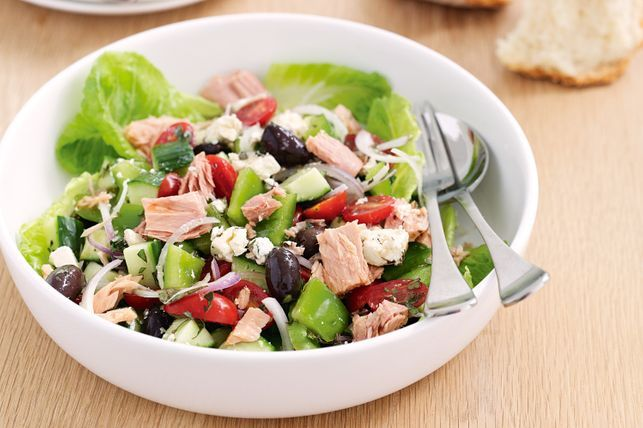

Ingredients
- 2 cans (5 oz each) tuna, drained
- 1/2 cup mayonnaise
- 1/4 cup diced celery
- 1/4 cup diced red onion
- 2 tablespoons chopped fresh parsley
- 1 tablespoon lemon juice
- 1 teaspoon Dijon mustard
- Salt and pepper to taste
- Lettuce leaves for serving
- Sliced tomatoes and cucumber (optional)
Instructions
- In a large bowl, flake the drained tuna with a fork.
- Add mayonnaise, diced celery, diced red onion, chopped parsley, lemon juice, Dijon mustard, salt, and pepper to the tuna. Mix well until all the ingredients are combined.
- Taste and adjust the seasonings if needed.
- Cover the bowl with plastic wrap and refrigerate for at least 30 minutes to let the flavors meld together.
- When ready to serve, line a plate with lettuce leaves and spoon the tuna salad onto the lettuce.
- Optionally, garnish with sliced tomatoes and cucumber.
- Serve the refreshing Tuna Salad as a sandwich filling or with your favorite bread or crackers.